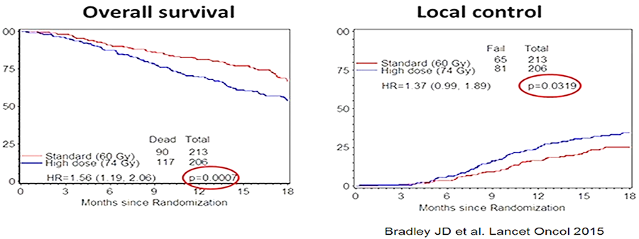

MÓDULO 3 : Estadios IIIA y IIIB

3.13 Dosis de radioterapia
El estudio fase III RTOG 0617 comparó la dosis estándar (60 Gy) vs dosis altas (74 Gy) con o sin cetuximab concurrente.
La SG fue significativamente menor en los pacientes que recibieron RT a dosis altas (74 Gy) en comparación con los pacientes que recibieron RT a dosis estándar de 60 Gy (SG 20 vs 29 meses; HR: 1.38, IC 95% 1.09-1.76). La toxicidad G5 relacionada con el tratamiento y la esofagitis G3 también fueron más frecuentes en el brazo de RT a dosis altas.
Importante: La dosis recomendada de RT torácica radical es de 60 Gy en 30 fracciones de 1.8 a 2 Gy.
Impact of RT dose (60 Gy vs. 74 Gy):
